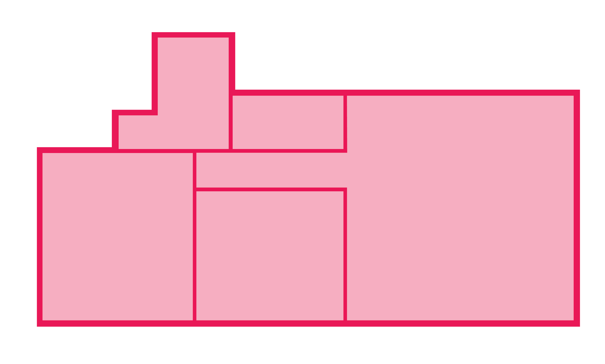

Click on the room you want to explore
Living Room
Small Bedroom
WC
Bathroom

WELCOME (BACK) HOME
The masses of tourists at your doorstep and at every turn made it difficult for you to navigate your own hometown to go on the most basic errands. The discount supermarket down the street is now pricier inner city mini-market with a souvenier section.
Tourists shamelessly peer into the windows, unaware of the respectful etiquette that substitutes curtains around these parts. Most of your neighbours have their blinds down all day lately. No one sits on their front steps to be gawked at like a zoo animal, or even photographed.
You didn’t feel safe coming home late at night. You always ran into some young traveler, high as a kite and completely lost, who’d unintelligibly mumble asking for directions.
But it was your town, where your friends and family are, where you grew up, went to school, workerd part-time... It was all worth putting up with to be able to stay.
However, living in the city center actually became impossible: your rent had continued to climb to immoral new highs and you reluctantly had to move out. Far out, outside of town. You were a long crowded commute away from, essentially, your whole life in the city.
Just so your landlord could rent out your apartment, as well as your five other neighbours’, out to tourists and make more money in a week than you paid them in a month’s rent.
After years of living like this and watching the city become unrecognisable to the locals, a movement to take it back brought you together.
Organised and efficient, you passed off as tourists at first, renting them out for a night or two.
But that was just enough time to change the locks and move in your things, with the help of the movement’s network. You start paying a fair rent and tell your story to the press, to gain attention and protection. You keep up with the news and with your movement’s every move.
Your neighbours support your cause and look out for you. You’re part of the community again. The city continues to change, from the inside in.